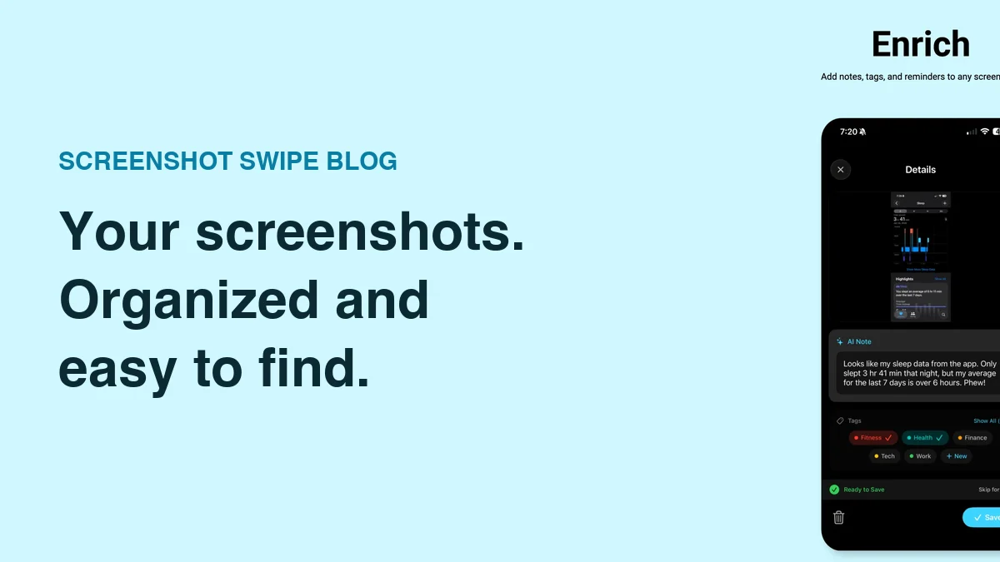

How to Organize Screenshots on iPhone So You Can Actually Find Them

Quick answer: Start with your most recent screenshots, remove obvious rejects, and give useful keepers a short explanation. Apple Photos supports albums and searchable captions; a screenshot organizer can add reusable tags and item reminders. Keep the system small, then review a recent batch each week before tackling the older backlog.
You saved a recipe, a return code, and three gift ideas. By Sunday, the screenshots are still there, but the reasons you took them are getting fuzzy. The organizing work is deciding what remains useful and giving it enough context to find again.
Where should you start with an unorganized screenshot library?
Open the Screenshots collection in Photos. Current Apple instructions put it under Collections → Media Types → Screenshots; older layouts use Albums. See Apple’s screenshot guide if your layout differs.
Choose a recent, manageable batch. Twenty images you still remember are a better test of your system than several years of captures with missing context. Leave older material alone until you know how you want to handle new screenshots.
How do you decide what to keep?
Ask what you would use the image for. A completed delivery update may be finished. A repair receipt, set of instructions, or decision you have yet to make can still have a purpose. Give uncertain items a later review rather than forcing a rushed deletion.
Use three decisions:
- Reference: keep information you expect to retrieve.
- Action: keep an image that supports something you need to do.
- Finished: delete an image once you are confident its purpose has ended.
Decide by the value of the information, not by whether the screenshot looks tidy. An unattractive booking email may matter much more than a polished product image.
What can Apple Photos already do?
Photos offers albums, captions, and search. A caption can preserve the reason you saved an image, and Apple explicitly supports searching captions as well as text in images. The Photos search guide describes those options.
Start with a broad album such as “Home projects,” then add an explanation to individual keepers: “replacement filter model for the downstairs unit.” You can use the notes guide for the exact caption steps and alternatives.
When do tags and reminders help?
Tags help when several screenshots belong to a recurring category. Reminders help when a screenshot needs action at a particular time. Keep those roles distinct so a category called “Important” does not become a substitute for a due date.
Screenshot Swipe combines keep-or-delete review with optional notes, tags, and reminders. Its free core workflow supports manual organization; Pro adds AI assistance. On-device OCR is available for text search, while optional AI features have their own processing behavior described in the privacy policy.
Use an app-based tagging system for categories you want to filter regularly. Start with the tagging guide, then give time-sensitive items a separate reminder.
How do you keep the pile manageable each week?
Choose a recurring moment that already has room for a small task: after your weekly planning or while clearing your desk. Review the recent queue, finish obvious decisions, and stop when you reach the time you set aside. A bounded routine is easier to repeat.
For example, you might review ten screenshots, delete four finished items, label three references, and give one an action date while leaving two for later. Those numbers are a sample session, not a target. The useful result is knowing where the remaining items belong.
How should you handle hundreds of older screenshots?
Work through one period or category at a time after the new-item routine is working. If you are hesitant about an entire batch, inspect it before using bulk selection. Our deletion guide covers the cleanup sequence and what happens with iCloud Photos.
Keep a simple retrieval test: every so often, try to find a screenshot you organized last week. If you remember the tag but cannot find the image, simplify the labels. If you can find the image but have forgotten its purpose, improve the note.
What else should you know?
What is the simplest screenshot organization system?
Use a small recent batch, three decisions, and a short explanation for useful keepers. Decide whether each screenshot is reference material, supports an action, or has finished its purpose. Add a label where it helps retrieval and a reminder when the action has a useful date.
Do I need an app to organize screenshots?
You can begin with Apple Photos, using albums and searchable captions. An additional app is worth evaluating if you want screenshot review, reusable tags, and reminders together. Start with the built-in approach and identify the specific repeated action you want another tool to make easier.
Should I organize my entire backlog first?
Start with new or recent screenshots so you can test the process while you still remember the context. Once that routine is sustainable, work through older material in bounded sessions. Finishing several years of captures is less urgent than making the next useful screenshot easy to find.
How often should I review screenshots?
Try a weekly review and adjust it to how often you capture useful information. A short daily session may suit a busy screenshot habit; occasional users may need less. The important part is returning before the context fades and giving time-sensitive items their own reminders.
What should your next review include?
- Choose a small recent batch and decide which images still have a purpose.
- Add a useful explanation to keepers and schedule any actions.
- Find one keeper again, then set a time for the next review.
Remember why you saved it.
Screenshot Swipe is free to start. Add notes and tags to the screenshots you keep, so the useful details are easier to find later.
Download on theApp Store